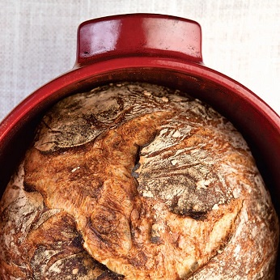

The Saturday White Bread

Description
This recipe is designed for someone who wants to make good, crusty loaves of white bread from start to finish in one day. Mix the dough first thing in the morning, shape it into two loaves about five hours later, and then bake in the late afternoon in time for dinner. Here you get the taste-good benefits of a medium-length fermentation, resulting in a versatile, delicious bread that’s great as a dinner bread and also works well for sandwiches and toast.
Ingredients
Flour
Water
Salt
Yeast
Steps
- Mix
- Fold
- Divide
- Shape
- Proof
- Preheat
- Bake